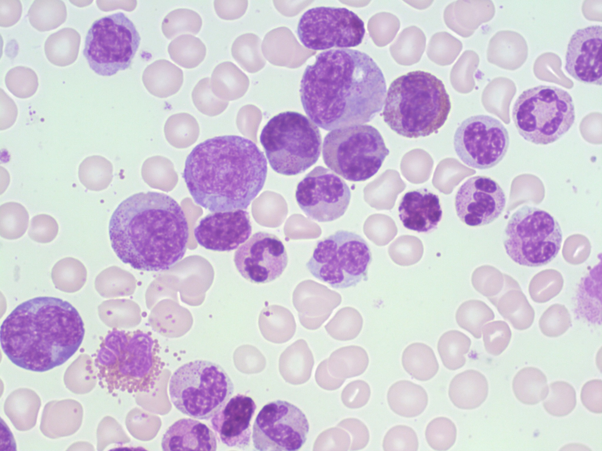

Imagine you are going to your grandmother’s house after school.
You usually go to her house a few days a week after school and it’s your first week back after summer vacation.
You notice that she is more tired than usual and has this cough that doesn’t seem to go away. You go home for dinner and tell this to your parents and
they schedule a doctor’s appointment for your grandmother. She goes to the doctor and tells them how she has
been feeling extra tired in the past few months and has developed a cough with chest pain in the past few weeks.1,2
The doctor orders some blood tests for her and sees that she had a very high white blood cell
count, which are the cells responsible for fighting infections, viruses, and other diseases.
3 A normal person has a white blood cell count ranges from 4,000-11,000 per microliter, however
she had a blood cell count of over 200,000!3 Her doctor ran a few more tests and unfortunately
discovered that she has a form of cancer called Chronic Myeloid Leukemia.
Chronic Myeloid Leukemia (CML) is a cancer of the myeloid cells, which are cells that make red blood cells, platelets
and most types of white blood cells. Below is the picture of a bone marrow smear which is another method for diagnosing a patient with CML.
